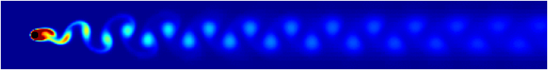
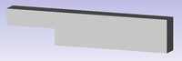
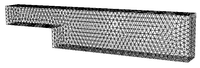
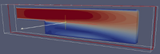

CFD - Strömungssimulation
"Die numerische Strömungsmechanik, die auch unter der Abkürzung CFD (computational fluid dynamics) bekannt ist, ist eine etablierte Methode der Strömungsmechanik. Sie hat das Ziel, strömungsmechanische Probleme iterativ mit numerischen Methoden zu lösen (bspw. Gauss-Verfahren). Die verwendeten Strömungsgleichungen heißen Navier-Stokes-Gleichungen (Impuls- und Massenerhaltung). Durch Vereinfachungen und Annahmen ist es möglich vereinfachte Strömungsgleichungen wie der Potential- oder Eulergleichung zu erhalten. Die numerische Strömungsmechanik bietet eine kostengünstige Alternative zu Versuchsreichen (bspw. Windkanal-Versuche, Geometrieoptimierung) und ermöglicht es Strömungsparameter zu analysieren, die messtechnisch nicht messbar sind (turbulente kinetische Energie, Wirbelviskosität etc.)." Quelle: Numerische Strömungsmechanik - Ferziger, Joel H., Peric, Milovan, 2008
Beispiel: Simulation eines Zylinders in einer Strömung mit Kármánscher Wirbelstraße (Bildquelle)

Diese Seite soll einen Überblick über die für Linux bzw. Ubuntu nativ verfügbaren Open-Source- Strömungssimulationsprogramme geben.
Arbeitsschritte¶
Die Bearbeitung von strömungstechnischen Problemen mithilfe der Strömungssimulation gliedert sich in vier Arbeitsschritte:
| Arbeitsschritte | |||
| 1. Vorbereitung | 2. Preprocessing | 3. Solving | 4. Postprocessing |
| Erzeugung der "Fluid-Geometrie" in einem CAD-Programm | Vernetzen (Meshing) der "Fluid-Geometrie" | Definieren der Fluid- und Randbedingungen und Lösung mit Hilfe der Modellgleichungen | Grafische Aufbereitung und Darstellung der Ergebnisse |
|  |  |  | |
Die meisten Strömungssimulationsprogramme enthalten Solver und ein Postprocessing-Programm.
Preprocessing/Meshing¶
| Preprocessing/Meshing | ||
| Programm | Beschreibung | Installation |
Netgen  | 3D-Vernetzungsprogramm mit vielen Import- und Exportformaten, gute Bedienbarkeit, leider schlecht Dokumentation der vielen Funktionen | netgen (universe) |
| Gmsh | 3D-Vernetzungsprogramm, Bedienung "Mac-like" | gmsh (universe) |
| Discretizer | einfacher 3D-Geometriemodeller mit integrierter Vernetzungserstellung, auf die Weiterverarbeitung der Modelle mit OpenFOAM optimiert, Bedienung sehr einfach | Programmdownload  , tgz-Archiv entpacken , tgz-Archiv entpacken |
| Discretizer::Setup | GUI für OpenFOAM, Netzimport aus verschiedenen 3D-Vernetzungsprogrammen möglich | Programmdownload , tgz-Archiv entpacken |
Solving und Postprocessing¶
| Solving und Postprocessing | |||
| Solver-Programm | Post-Programm | Beschreibung | Installation |
| Elmer | Elmer Post | Eignet sich, um 2- oder 3-dimensionale Berechnungen durchzuführen. Bedienung durchgängig über GUI. | elmer (universe) |
| OpenFOAM | Paraview | Früher kommerzielles 2D und 3D Strömungssimulationsprogramm, seit 2005 Open Source. Mit umfangreicher Dokumentation. | siehe OpenFOAM |
| Fire Dynamics Simulator (FDS) | Smokeview (SMV) | Simulation von Bränden (siehe auch Archiv/FDS-SMV) | Programmdownload , tgz-Archiv entpacken |
| Gerris | - | Solver zum Lösen von partiellen Differentialgleichungen | gerris (universe) |
Verwendung von Open-Source-Programmen¶
| Arbeitsschritte unter Verwendung von Open-Source-Programmen | ||||
| CAD | Austauschformat | Mesher | Austauschformat | Solving und Postprocessing |
| Salome | STL | Netgen | netgenneutral | OpenFOAM mit Paraview |
| Free-CAD | STL | Discretizer-Setup | - (in Discretizer-Setup integriert) | OpenFOAM mit Paraview |
| Discretizer | - | Discretizer | - (in Discretizer integriert) | OpenFOAM mit Paraview |
- Erstellt mit Inyoka
-
 2004 – 2017 ubuntuusers.de • Einige Rechte vorbehalten
2004 – 2017 ubuntuusers.de • Einige Rechte vorbehalten
Lizenz • Kontakt • Datenschutz • Impressum • Serverstatus -
Serverhousing gespendet von